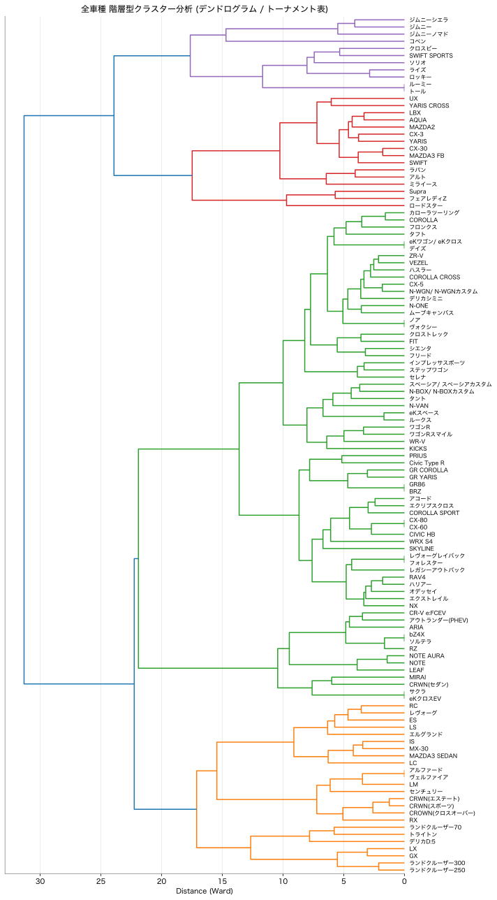

フィルター操作により分析散布図内の表示車種をリアルタイムに絞り込みます。
| 車種名 | メーカー | カテゴリー | セグメント | クラスター |
|---|
偏差値ベース。フィルターにより特定セグメントやボディタイプの市場ポジションを浮き彫りにします。
全120車種の類似度に基づき、どのようにグループ（クラスター）が形成されているかを示す階層図です。結合位置が左にあるほど、車同士の特徴（評価特性）が似ていることを示します。
※ この図は全車種を通じた総合的な分類体系を示す静的モデルのため、上部のフィルター選択とは連動しません。上下にスクロールしてご確認ください。
